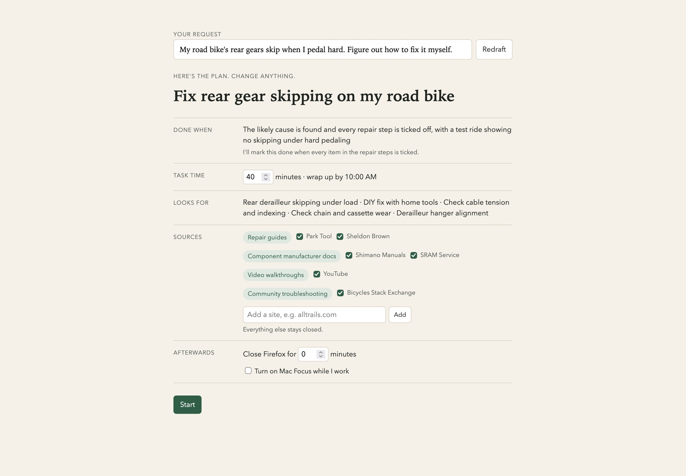
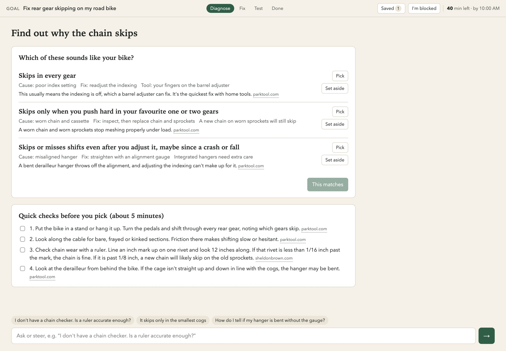
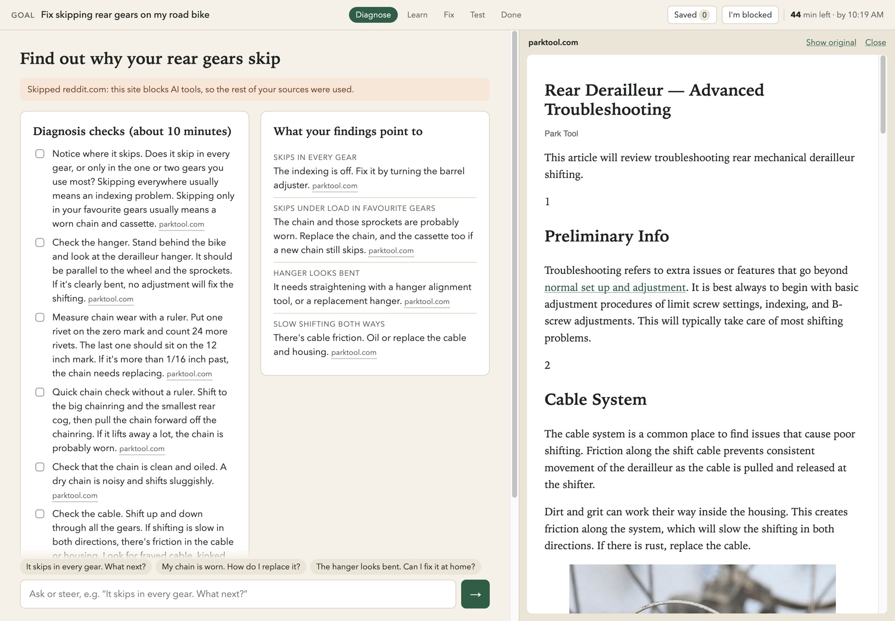
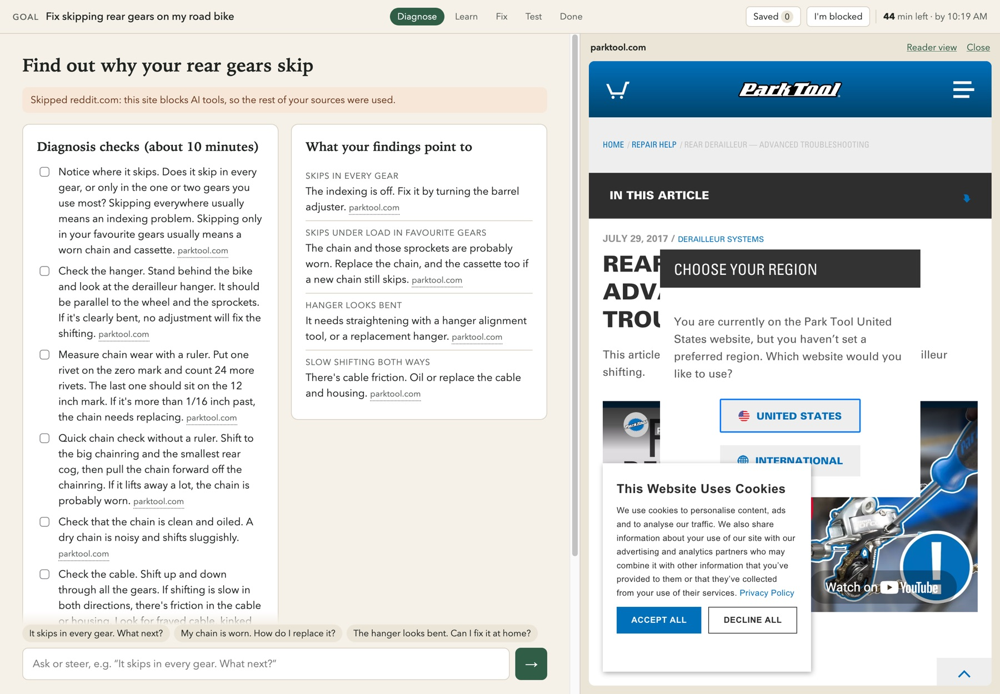
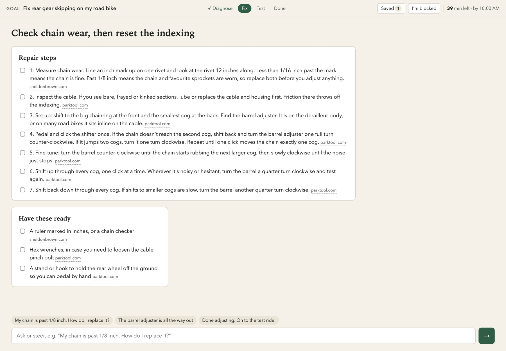

Get online, get it done, get back to your people.
Focus Browser starts by asking what you're trying to do. It builds the screen that task needs, keeps everything else out, and closes when you're done. A working Firefox prototype, with the AI researching live sites.
A closer look: fixing a bike





1 / 5